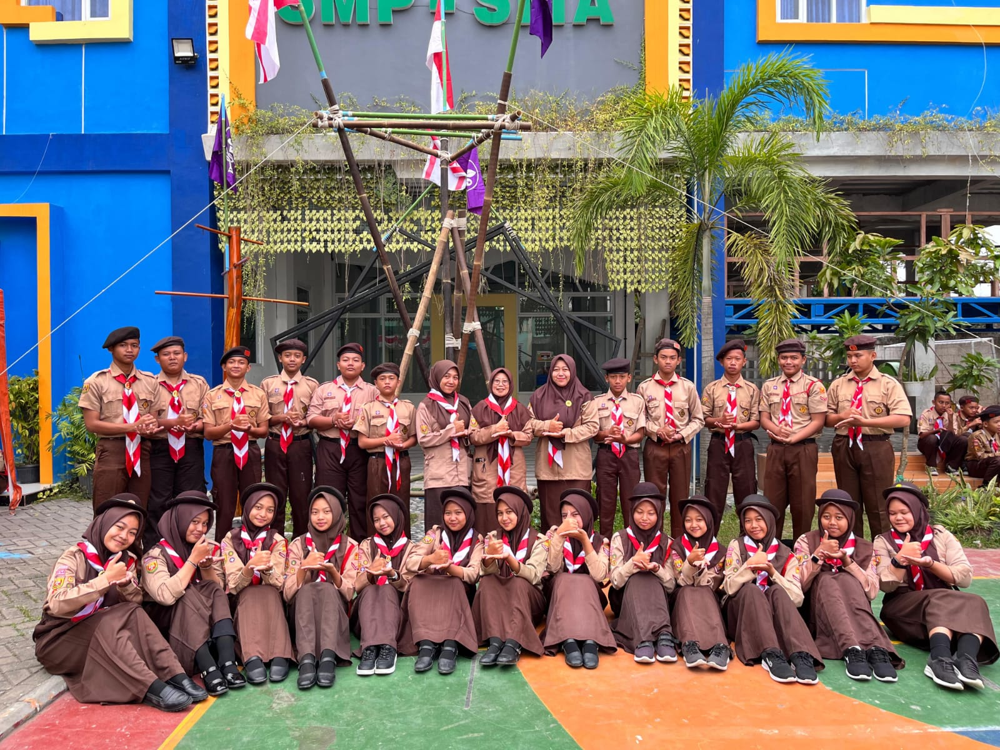
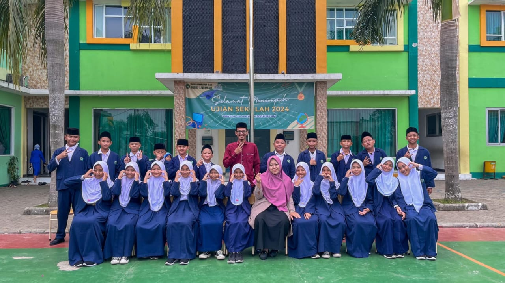
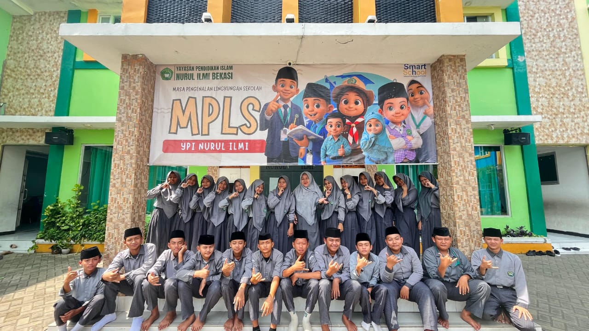
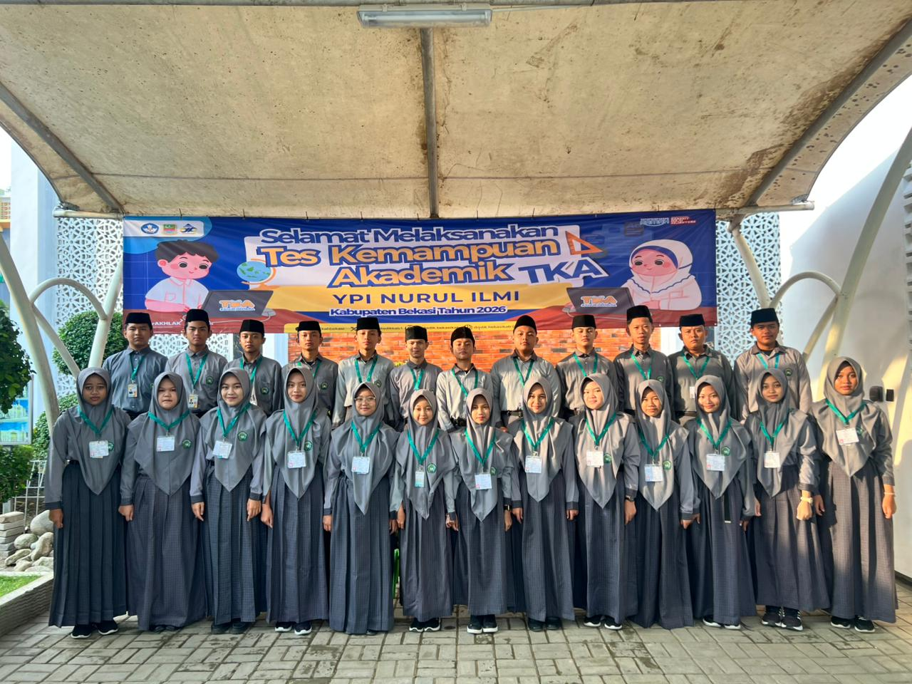
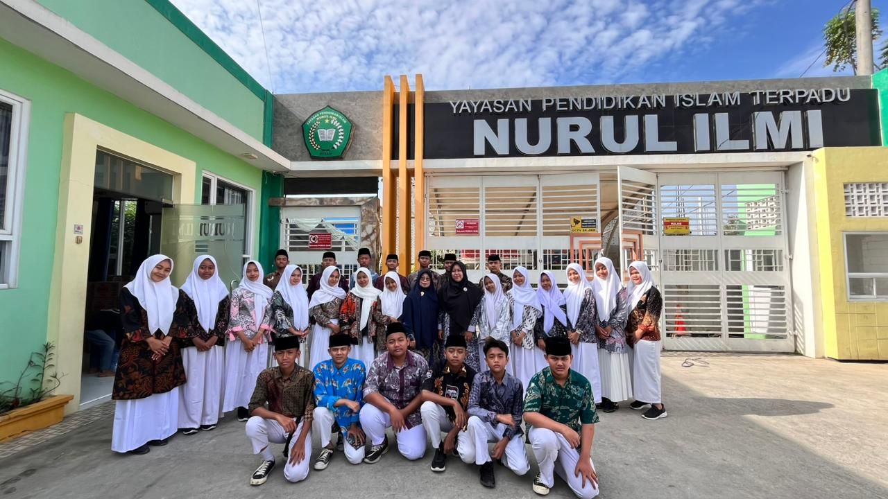
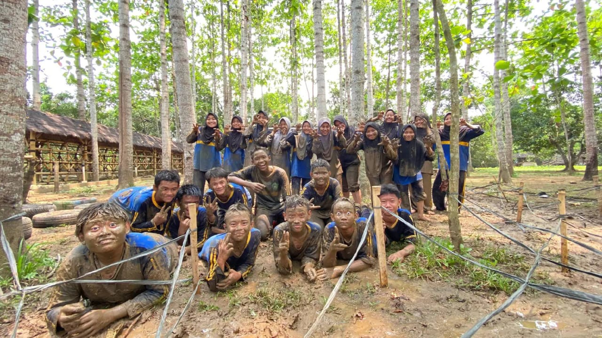

YPI Nurul Ilmi Bekasi · Graduation 2026
YPI Nurul Ilmi Bekasi · Graduation 2026
"Small Steps – Big Dreams"
SMPIT YPI Nurul Ilmi Bekasi
Pesan & Harapan
"Langkah kecil yang dimulai hari ini akan menjadi awal dari mimpi-mimpi besar di masa depan. Setiap proses, setiap perjuangan, dan setiap kenangan akan selalu menjadi bagian indah dalam perjalanan menuju kesuksesan."
Kepala Yayasan YPI Nurul Ilmi Bekasi
Sumartono, M.T.
Visi dan Misi
Membangun Generasi Islami yang Unggul dan Berdaya Saing
Visi
Mewujudkan Generasi Beriman dan Berwawasan Ilmu Pengetahuan
Misi
Tema Graduation
"SMALL STEPS – BIG DREAMS"
Small steps today, big dreams tomorrow.
Ketentuan Acara
Agenda Pelepasan Siswa/Siswi & Puncak Tema Tahun Ajaran 2025 - 2026
YAYASAN PENDIDIKAN ISLAM NURUL ILMI
Hadir di lokasi paling lambat pk. 06.30 dengan menggunakan pakaian rapi/sopan
Pada pk. 06.45 sudah memasuki ruang acara
Duduk rapi sesuai dengan tempat duduk yang telah ditentukan
Mengikuti arahan dari guru masing-masing
Dianjurkan sudah sarapan dari rumah
Undangan berlaku untuk bapak/ibu/walimurid yang namanya tertera pada surat undangan
Saat registrasi undangan akan di scan sesuai dengan QR code yang tertera, bagi yang tidak membawa undangan tidak diperkenankan memasuki ruang acara
Dianjurkan menggunakan baju batik terutama bagi para ayah
Acara akan dimulai pk. 07.00 – selesai
Tamu undangan diharapkan duduk dengan tertib sesuai kursi yang telah ditentukan
Saat acara berlangsung, tidak diperkenankan mengambil photo dengan maju ke arah panggung atau keluar dari tempat duduk. Pengambilan dokumentasi dilakukan oleh tim terkait dan hasilnya akan disampaikan kemudian
Demi ketertiban acara, agar menyetel handphone dengan mode silent / diam
Sesi photo bersama keluarga akan dilakukan sebelum / sesudah acara dilaksanakan
Hitung Mundur & Agenda
Sabtu, 13 Juni 2026 · Pukul 07.00 WIB
Kenangan Bersama
Klik foto untuk melihat lebih besar






Lokasi & Waktu
Lapangan Nurul Ilmi
BWI 2 Blok B1 No. 1, Kedungwaringin,
Bekasi, Jawa Barat
Sabtu, 13 Juni 2026
Pukul 07.00 WIB sampai selesai
Protokol Kehadiran
Ibu / Wali
Kebaya atau Gamis Formal · Warna Netral Elegan
Bapak / Wali
Koko / Batik Resmi · Celana Bahan
Siswa
Toga Resmi Sekolah (telah disediakan panitia)
Kapasitas
Maks. 2 tamu undangan per siswa
Mohon tidak membawa anak kecil di bawah usia 5 tahun demi kelancaran prosesi. Harap mematikan atau mengalihkan ponsel ke mode senyap selama acara berlangsung. Pintu masuk akan ditutup saat prosesi dimulai pukul 07.30 WIB.
Konfirmasi Kehadiran
Mohon konfirmasi kehadiran Anda sebelum hari H
Panitia Graduation 2026
SDIT · SMPIT · Kedungwaringin · Bekasi
Hari ini bukanlah akhir dari perjalanan, melainkan awal dari langkah baru untuk menggapai impian yang lebih besar. Bersama kenangan, doa, dan harapan, setiap siswa akan melanjutkan perjalanan menuju masa depan terbaiknya.
Terima kasih kepada seluruh guru dan orang tua yang telah menjadi bagian penting dalam perjalanan ini. Setiap ilmu, doa, dan dukungan akan selalu dikenang sepanjang waktu.
Tema Graduation 2026
"SMALL STEPS – BIG DREAMS"
Small steps today, big dreams tomorrow.
Bersama kita belajar, tumbuh, tertawa, dan menciptakan kenangan yang tidak akan terlupakan. Setiap momen yang telah dilewati akan selalu menjadi cerita indah untuk dikenang di kemudian hari.
"Dan barangsiapa bersyukur, maka sesungguhnya ia bersyukur untuk dirinya sendiri."
— QS. An-Naml: 40
Proud to be Nurul Ilmi Generation
Semoga setiap langkah yang diambil setelah hari ini membawa kebahagiaan, keberhasilan, dan masa depan yang penuh keberkahan.
© 2026 SDIT · SMPIT YPI Nurul Ilmi Bekasi · Dibuat dengan untuk momen yang takkan terlupakan